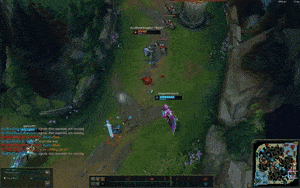
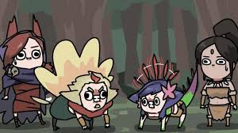
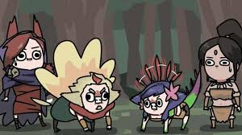

How to play Xayah
- Pay attention to your feathers during laning phase, cause on g whoever you're vsing won't. Easiest root of your life.
- Position your feathers in lane where you know your opponents will go (ie for cannon).
- Position your character right in front of your opponent and in between your feathers. In this way all the feathers will hit them for max damage.
- Following in from the previous point. You can e flash directly in front of your opponent to surprise them.

- You can also e, flash, gale force to increase distance like so.
- Only use your W when you're in auto attack range to maximise damage
- You can also Q and then E to have it pull back delayed.
 
